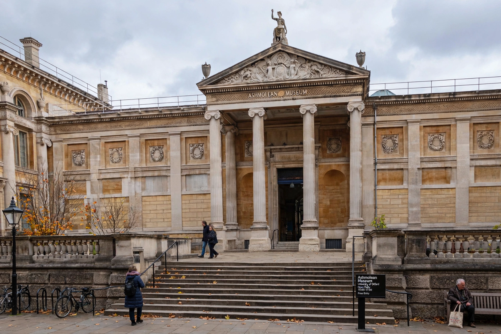

| Ashmolean Museum | |
| Location | Beaumont Street, Oxford, England |
|---|---|
| Established | 1683 (present building 1845) |
| Part of | University of Oxford |
| Named for | Elias Ashmole |
The Ashmolean Museum of Art and Archaeology on Beaumont Street in Oxford is Britain's first public museum and a department of the University of Oxford. Opened in 1683 to house the cabinet of curiosities that Elias Ashmole gave to the university in 1677, it is often described as the first modern public museum in the world.
Ashmole's collection was built largely on the Tradescant collection of rarities assembled by John Tradescant the Elder and Younger, supplemented by Ashmole's own coins, books, and manuscripts. The original museum building on Broad Street — now the Museum of the History of Science — housed specimens that famously once included the last dodo known in Europe. The collections moved to the present neoclassical building, designed by Charles Cockerell, in 1845. A major redevelopment designed by Rick Mather, adding an atrium and new galleries behind the historic facade, reopened in November 2009.
The Ashmolean holds the University of Oxford's art and archaeology collections: the finest group of Raphael drawings in existence, works by Michelangelo, Rembrandt, Turner, and the Pre-Raphaelites, the Alfred Jewel, Minoan and Egyptian antiquities (including material excavated by Flinders Petrie), the Pissarro family archive, and Chinese, Islamic, and Indian art including major holdings of Iznik pottery and Persian art. Its print room and coin room are major scholarly resources.